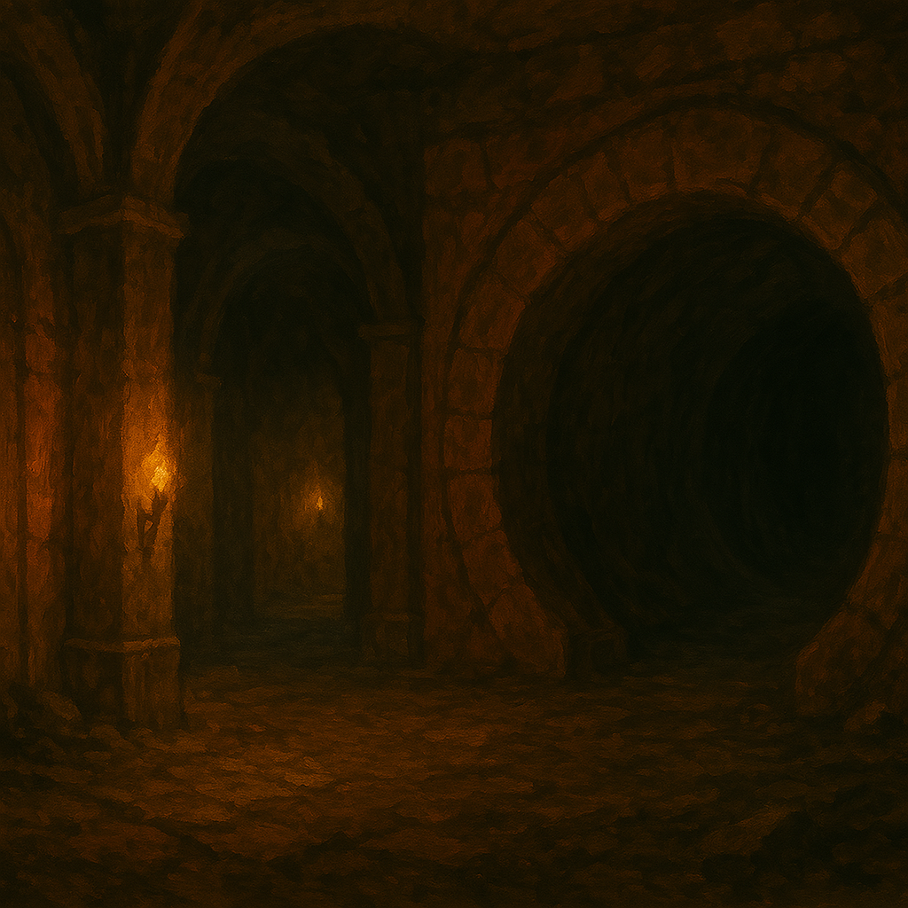

Chapter 2: Venture into Darkness
Beneath the Temple

Beneath the Temple
15048日期未知
矗立在冒險者面前的，是一個巨大的牢籠，裡面困著一個瘦弱、橘髮，膚色慘白的年輕女子。在和女子溝通後，冒險者們成功打開了牢籠，拯救了他出來。
這麼女子是一名半妖精，自稱 Trisha of Baylon（來自貝倫的崔夏）。他的父母是拉索斯的忠實信徒，卻因為遭到背叛，而使 Trisha 被關進地下城。在冒險者們的陪伴與照顧下，Trisha 與冒險者們一同繼續前進。
在路程中，Trisha 主動找了幾位不同的冒險者和他們攀談，想了解他們是怎麼樣的人。其中，主動伸出援手的 Uko 最得 Trisha 的心，而 Trisha 的經歷也讓 Samael 因為有類似的童年經歷而感同身受。冒險者們也發現 Trisha 看得懂牆壁上的拉索斯語。
在地下城中，因為看不見陽光，冒險者們已經漸漸失去了時間觀。Trisha 因為疲倦而睡著了，Uko 背著他前進，卻發現在背起 Trisha 後，自己之前撿到的神秘石頭竟然開始不斷地震動。出於好奇，Uko 放下 Trisha，取出了神祕石，試圖將石頭放在 Trisha 手上，石頭卻直接融入了 Trisha 的體內，頓時他的身體發出了紫色的亮光後，光芒就消失了，就像什麼都沒有發生過一樣。在眾人驚駭之餘，沒有人知道到底發生了什麼事，更不清楚這是好是壞。
背著熟睡的 Trisha，冒險者們走入了一座被漆成紅色的大廳，兩側各有五個大水管似的金屬圓框，深不見底。冒險者們覺得有異，做好了戰鬥的預備，在大廳等待了十來分鐘，圓框內逐漸傳來腳步聲，腳步聲越來越大，直到數隻哥布林從圓框內踏了出來。
走出水管的總共有十隻哥布林，以及一隻哥布林王。三隻哥布林在戰鬥前就被突襲的冒險者殺死了。站在最後的兩隻哥布林分別拿了一塊木板，為哥布林王搭起了一座小舞台。站上小舞台哥布林王透過 Rugatha 語向冒險者們邀約成為哥布林戰隊的一員，卻隨即被沒有聽到他的宣言，從異界傳送回來的 YHWH 用法術射死。看見自己的王被打死，剩餘的歌布林倉皇逃走，只有一隻哥布林因為被 Uko 擊暈而留了下來。YHWH 用 bag of holding 取走了哥布林的牙齒，而 Uko 則取走了哥布林王頭上掉落的王冠，依照 Trisha 的解讀，上面寫著拉索斯語的「地底王（Lord of the Underground）」。隨後，Usioni 用繩子將被俘虜的歌布林綁在他身上，每當哥布林吵鬧或踰矩時，Usioni 便啃斷哥布林的一根指頭作為懲罰。
冒險者們決定往哥布林王走出來的水管內進行探索。走了好一段時間，水管內已失去光線，且酷爆似乎發出了不安的叫聲，因此冒險者們決定折返。
冒險者們繼續往前走了一段時間，來到了一座上鎖的大門。Trisha 用了他工具包內的器具，花了點時間，成功把門鎖解開，大夥兒踏入了一座木質地板的房間，中間是一座祭壇。而躺在祭壇上的，是來自沃瓦倫鎮的鎮長夫人 Jasmine。Jasmine 身上插了一把刀，上面用拉索斯語寫著「Sacrifice」和「Bloodline」，而 Trisha 也在祭壇旁唸出了他的全名，Jasmine Dranison Warren。
悲痛之餘，Midori 決定將 Jasmine 裝進 bag of holding，以將他帶到地面安葬。在 Midori、YHWH 與 Paladin 挪動屍體的同時，Uko 做了個惡作劇，把祭壇上的蠟燭全部熄滅，挪動屍體的三人懷疑是不是觸動到了祭壇的機關，連忙把屍體放回原處，在 Uko 的操弄下，蠟燭也全亮了，此舉讓 Domneil 感到非常開心。不過最後眾人還是成功將 Jasmine 放入了 bag of holding 內。
大夥兒決定在這個房間內簡單休息，Trisha 跑去關心了站在遠處的 Midori，並透露自己腦中出現了可怕的聲音，要他做壞事，不過他很努力的忍住了。後來圍坐了起來，而好奇的 Trisha 也開始詢問大家的來歷。中途，Uko 也前去和 Midori 搭話，卻因為附身在 Midori 體內的拉索斯教徒靈魂的控制，差一點起了衝突。
Uko 也利用了這段時間，試著用動物的語言和被俘虜的歌布林（此時已被 Usioni 冠名為 Knicol）以及酷爆溝通。透過 Uko，大家得知酷爆的本名為 Darren；而 Knicol 則說了他的本名叫呱啦，也透露他們來自地下城內的一個哥布林部落，那裡只有哥布林和一些武器，並沒有冒險者們想像中的金銀財寶。
Usioni 靈機一動，請 Uko 拿出了哥布林王原本戴在頭上的皇冠，放在 Knicol 頭上，而 Midori 也拿出了之前從 Tai Tai 我還要那裡取得的衣物，最為 Knicol 的披風，並用小袋子內的沙子撒在 Knicol 身上，眾人將 Knicol 加冕為 Lord Knicol, King of the Underground（地底王尼可大人）。
眾人起身離開房間，隔壁的房間空空蕩蕩，裡面只有一個寶箱。在 YHWH 用了法術試圖打開卻失敗後，Trisha 嘗試開鎖，開了很久卻始終打不開，而且發現自己的手竟然黏在鎖頭上了。為了拯救 Trisha，大家試圖切開鎖頭，卻發現這個寶箱竟然是一隻擬態怪變成的，也只好和他進行戰鬥。擊敗了寶箱擬態怪後，大家鬆了一口氣，卻在通往下一個門的時候發現這個木門是另一隻擬態怪變成的而遭到攻擊。在打敗了第二隻擬態怪後，大家選擇回到上一個房間做長休息。
第一班的夜班，Midori 似乎又被控制住，試圖刺 Ron，驚動了大家，所有人試圖攻擊 Midori，終於將他擊暈。大家決定換到見到擬態怪的房間休息。然而，Midori 又再次被喚醒試圖攻擊，守夜和交班的冒險者決定把他綁起控制住。
在 Uko 和 Jiaheng 守夜時，他們發現了原本是擬態怪偽裝的木門後的空間似乎傳來了嗡嗡的聲響，且那扇門原本通往一個陰暗的長廊（上面有拉索斯的文字），卻在嗡嗡聲後換了一個房間，一個明亮房型的空間。他們也發現在兩個房間交界的門框似乎有逐漸淡去的魔法能量。